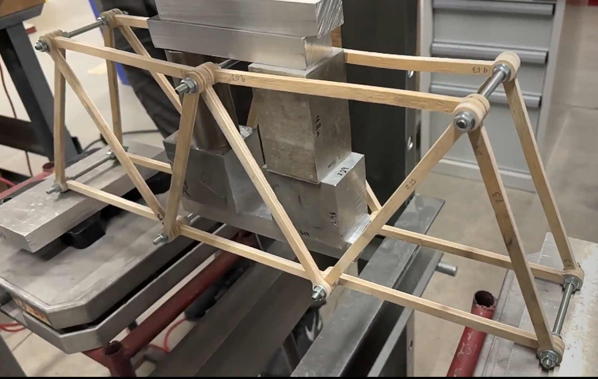

Hardware
Truss Bridge Optimization
Parametric MATLAB truss analysis optimizing bridge geometry for maximum load-to-weight ratio.
Overview
Modeled and analysed truss bridge forces using parametric MATLAB simulations to optimise geometry and member layout.
Approach
Parametric modelling and validation through physical prototyping and load-cell testing.
Results
Identified efficient geometries with improved load-to-weight ratios and validated with experimental testing.